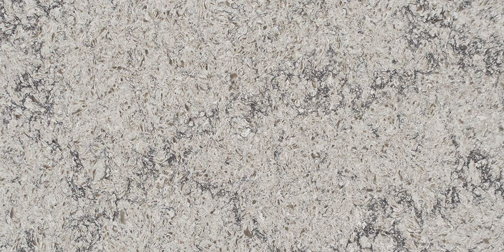
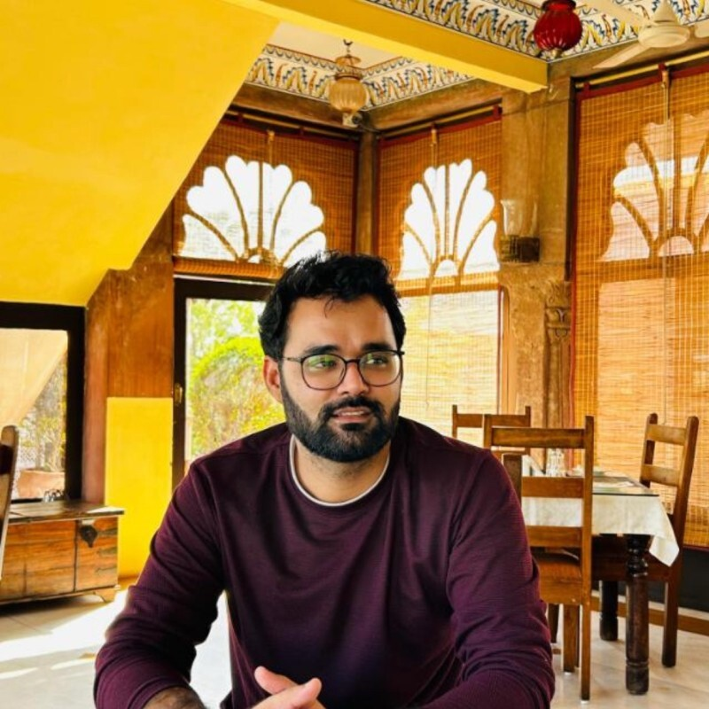

Quartz R&D | Formulation Low Silica | Zero Silica | Breton | Robotics | BITS Pilani

BITS Pilani alumnus with 5+ years of experience in engineered quartz / composite stone manufacturing across R&D, product development, robotics automation, and process stabilization.
Currently leading product development and quality initiatives in a Breton-based quartz plant, working on Carrara and Calacatta designs, low-silica and zero-silica formulations, raw material validation, and scale-up trials.
Strong focus on yield improvement, defect reduction, robotic integration, data-driven process control, and making R&D designs manufacturable at scale.